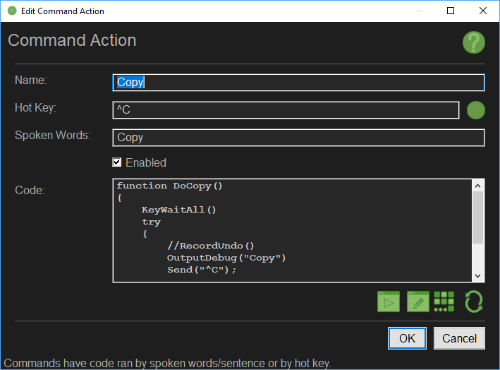

button on the right to activate the keyboard hot key recorder.
button on the right to activate the keyboard hot key recorder.The Edit Command Action Interface allows you to change the Command Name, the Hot Key, the Spoken Sentence and the Code to run when the action is triggered, as well as enabling or disabling the Command Action.

A Command Action is triggered by a Hot Key or a Spoken Word or Sentence.
When you hit the hot key or speak the words listed here, the code is executed.
Specify the name for the Command Action as it would appear in the tree-view.
Specify the hot key to that will trigger the Command Action.
Use the
The possible Hot Key Combinations are Listed on the AutoHotKey Help Reference Page Here and Here.
Specify what words or sentences will trigger the Command Action.
This can be a single word like Reload or a sentence like Reload Primary Weapon
You may define multiple sentences or words for this action by separating each possible option by the pipe | character, for example Reload|Reload Primary Weapon|Reload Primary.
Note that the speed and reliability of the recognition system relies on how you define these spoken commands. It helps to have them easily distinguishable from one another. For Example if you have a Command Fire and you have a similar sounding command like Five, then there is a good chance there will be trouble identifying what has been said between those two choices, resulting in longer processing or error of choice.
Another thing to consider is the number of syllables in your sentence or word. Long story short, single syllable words do poorly.
Specify if the Command Action is enabled. Disabled Command Actions will not be processed or be added to the live hot key or recognition system, but may still be called by your code (By HKS.Action.Run()).
Specifies the code to run when the command action is to be performed. You can call any function or use any variables defined by the code in the Application Interface, or any of the code that was previously ran by items up the context chain.
Use the 
Use the 
Use the 
Use the 
Applies the changes and closes the dialog box. Some changes may require a restart.
Cancels the changes and closes the dialog box.